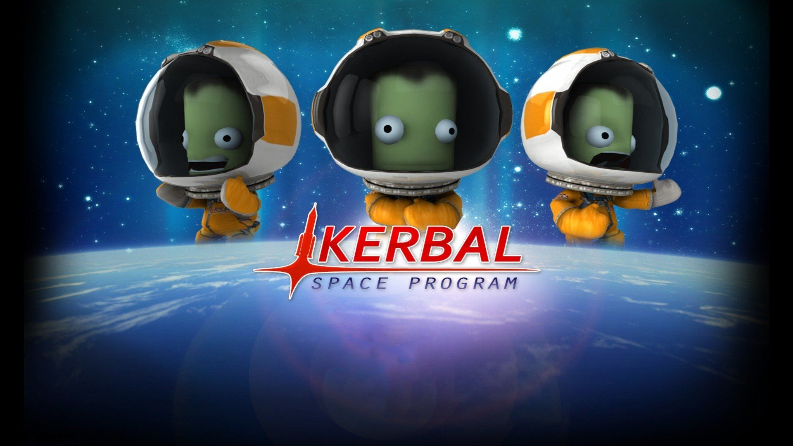
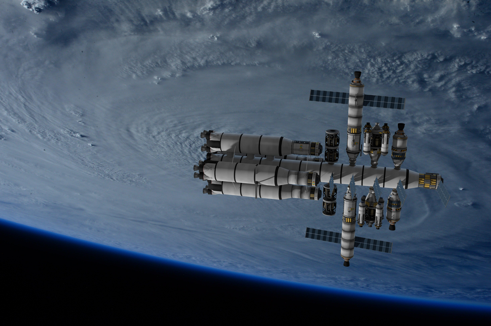

KSP - игра, где юзер становится инженером и пытается запустить ракеты в космос. Почему лишь пытается? Это уже совсем другая история
Kerbal Space Program (с англ. — «Космическая программа Кербала»; сокр. KSP) — компьютерная игра в жанре космический симулятор, разработанная и изданная компанией Squad. Игра относится к жанру подлинных космических симуляторов, продолжая реализм таких игр, как Apollo 18: Mission to the Moon и Microsoft Space Simulator.
События в игре происходят в вымышленной игровой вселенной, где инопланетяне (огурцы) начинают свою космическую программу, которая развивается под управлением игрока. Во время игры необходимо конструировать космические ракеты и самолёты, запускать их и выполнять исследовательские и научные задачи. Аналогами возможных в Kerbal Space Program космических программ являются программа «Аполлон», Международная космическая станция, Марсианская научная лаборатория Игра имеет поддержку модификаций. Первая публикация игры состоялась 24 июня 2011 года, и с того времени Kerbal Space Program постоянно обновляется и распространяется с помощью цифровой дистрибуции. Изначально игра предлагалась как бесплатное программное обеспечение, а в дальнейшем, в марте 2012 года, был осуществлён переход к модели раннего доступа. Официальный выпуск произошёл 27 апреля 2015 года. Игра доступна для платформ Windows, macOS и Linux. В 2016 году студией Flying Tiger Development (англ.)русск. Kerbal Space Program была портирована на консоли PlayStation 4 и Xbox One. Последней версией игры является 1.8.1, которая вышла 29 октября 2019 года.
Игра достаточно легка в понимании, но сложна в, хм, "использовании". Тут тебе сразу объясняют, что и как работает, показывают, как собрать и запустить первый аппарат. Во вкладке Обучение можно попробовать узнать что-то новое и научиться летать почти сразу. Но обучение для слабаков, поэтому мы все делаем методом научного(!) нажимания на рандомные кнопки. Кроме обычных взлетов мы должны еще и продвигать науку, поэтому клеим банку с таинственной слизью на бочку и твердым топливом, цепляем на нее несколько листов железа (для стабилизации), ставим сверху кабину экипажа, а на нее парашют. Вы великолепны! Так быстро создать аппарат для покорения космического пространства. Это прекрасно! Сразу же, не проводя никаких тестов, отправляем это на пусковой стол. Итак, 3, 2, 1. Запуск. Снаружи это выглядит красиво, но внутри, от перегрузок наш кербонавт должен был превратиться в огуречный салат. Ну или в кашу. Так вот. Наша ракета разогналась выше скорости звука и поэтому сильно тормозит. Через несколько секунд кончается топливо. Мы на высоте около 8 километров над Кербином (местный аналог Земли). начинается падение. На высоте в 2.5 км над уровнем земли открывается парашют. Все хорошо, кербонавт выжил, слизь в полете изучена, все довольны.
Так то создание ракеты заняло около 30 секунд, а на запуск потратили минут 5. Но это при идеальном раскладе. а на деле, после 5 минут создания мы тратим еще 20 на то, чтобы взлететь. И все же это интереснее, чем смотреть в стену или лежать лицом в пол, не правда ли. При этом есть возможность исследования новых частей для аппаратов, чтобы летать в атмосфере Кербина или наоборот, создать орбитальную станцию, или летать на Муну (Луну) и другие планеты
Не так давно анонсировали вторую часть KSP. О ней известно не так много, но не сложно стать лучшим, когда ты один, не правда ли?